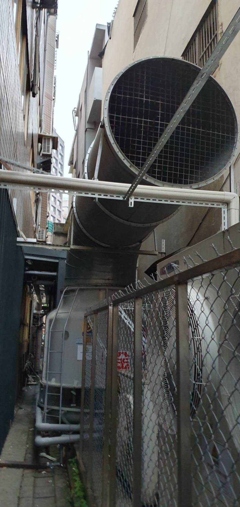

一、隔音罩不是越密閉越好
空壓機本身會產生熱量，若隔音罩只追求密閉，可能使設備內部溫度升高，甚至影響正常運轉。因此隔音罩必須同時考慮進風、排風與消音。
二、進排風也可能是主要噪音路徑
為了散熱而開孔後，聲音也可能從開口直接外洩。實務上通常需要透過消音風道、消音百葉或其他方式，在維持風量的同時降低聲音外傳。
三、低頻還可能從基座與管路傳遞
就算隔音罩把空氣傳聲壓低，如果設備基座、管路或支撐仍把振動送進建築結構，遠端仍可能出現低頻問題。
工程提醒：空壓機降噪的重點是「隔音＋散熱＋消音＋減震＋維修」一起考慮。